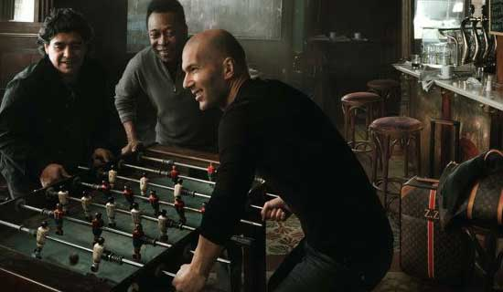

2010キャンペーン ペレ、マラドーナ、ジダンが夢の競演
ルイ・ヴィトン コア・ヴァリュー広告キャンペーンで「サッカーの神様」ペレ、マラドーナ、ジダンが夢の競演。
舞台はマドリードのバー「カフェ・マラヴィラス」。サッカー界のスーパースター、ブラジルのペレ、アルゼンチンのディエゴ・マラドーナ、フランスのジネディーヌ・ジダンの3人がバーに置かれたテーブルフットボールゲームを楽しむ。
カメラはゲームの結果に関係なく、3人の選手が心から楽しんでいる雰囲気や友好的なライバル関係を見事に捉えられている。
また、バーの傍らにはジダンのイニシャルがパーソナライズされたモン・モノグラムの「ペガス」、そしてスツールの上には「キーポル」が置かれている。
タグラインには「３人の類い稀なる人生という旅。伝説のゲーム。」というコピーが。
専用サイト「louisvuittonjourneys.com」では、３人のサッカー選手が、自らの人生や記憶に残る素晴らしい試合の数々、もっとも印象的なゲームについての感想などを語り合う。対談の終わりには、ペレとジダンがテーブルフットボールゲームを繰り広げるシーンを紹介。